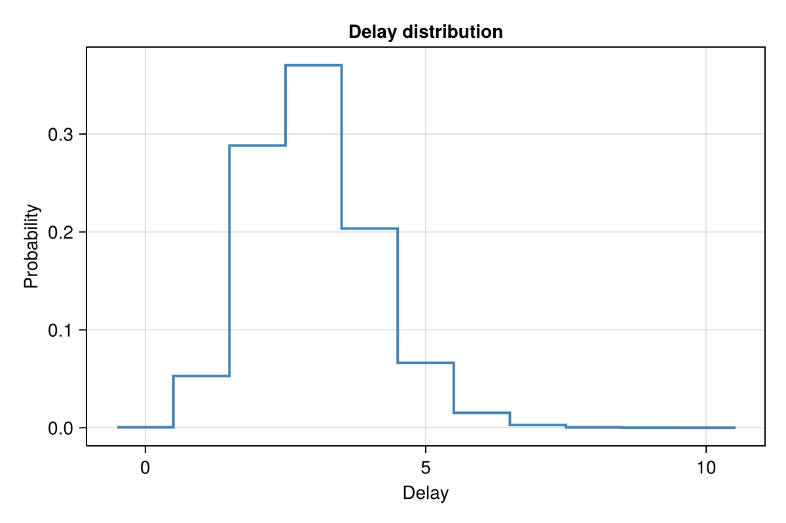
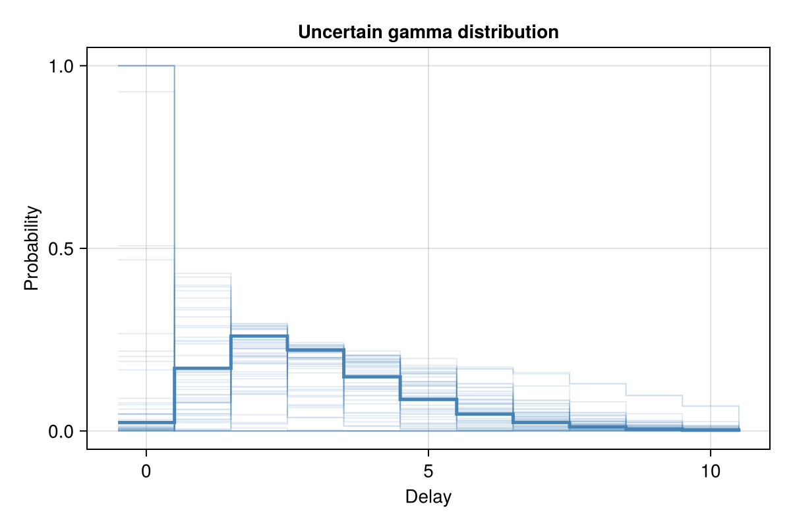
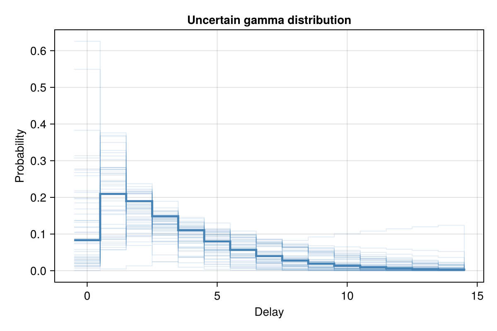
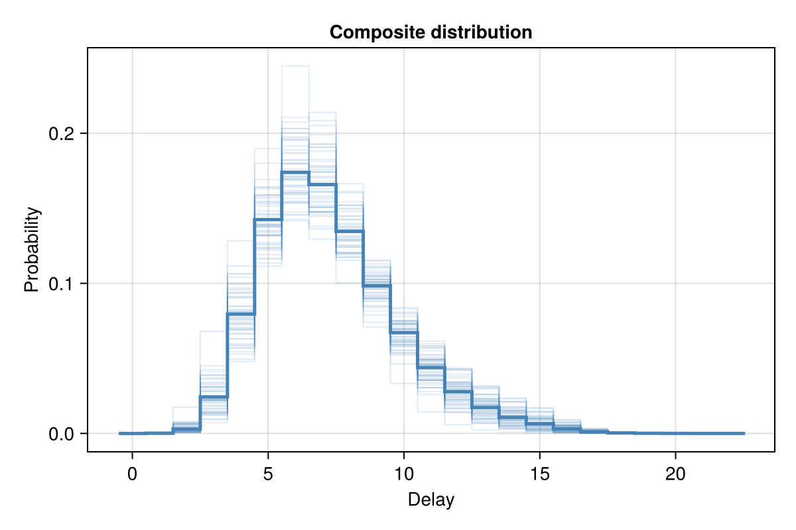
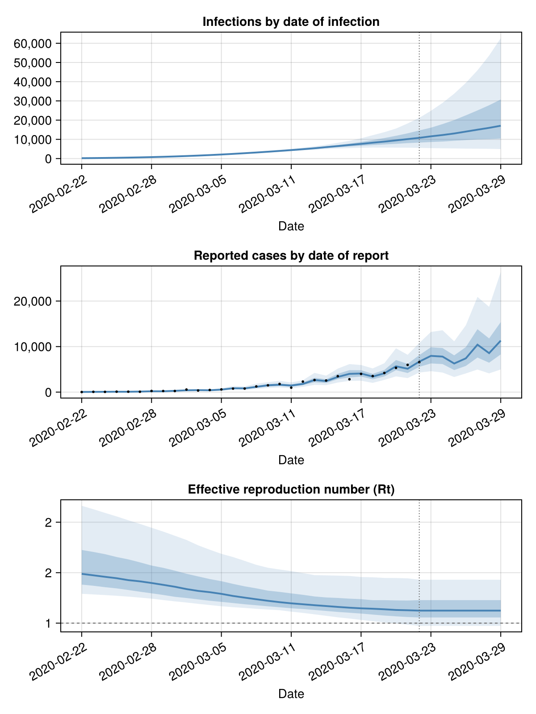

Workflow for Rt estimation and forecasting
This tutorial demonstrates the typical workflow for estimating reproduction numbers and performing short-term forecasts using EpiNow2.jl.
Setup
using EpiNow2
using CairoMakie
using CSV, DataFrames, Dates, Distributions, StatisticsData
EpiNow2 expects a DataFrame with columns :date and :confirm (representing reported counts).
pkgdir = dirname(dirname(pathof(EpiNow2)))
reported_cases = CSV.read(
joinpath(pkgdir, "test", "reference", "example_confirmed_full.csv"),
DataFrame
)
reported_cases.date = Date.(reported_cases.date)
reported_cases = first(reported_cases, 30)
first(reported_cases, 6)6×2 DataFrame
| Row | date | confirm |
|---|---|---|
| Date | Int64 | |
| 1 | 2020-02-22 | 14 |
| 2 | 2020-02-23 | 62 |
| 3 | 2020-02-24 | 53 |
| 4 | 2020-02-25 | 97 |
| 5 | 2020-02-26 | 93 |
| 6 | 2020-02-27 | 78 |
Parameters
Delay distributions
Distributions can be fixed (known parameters) or uncertain (priors on parameters, estimated jointly with Rt).
A fixed Gamma distribution:
plot(Gamma(9.0, 1/3); max=10)
An uncertain Gamma (priors on shape and rate):
uncertain_gamma = UncertainDistribution(
(shape, rate) -> Gamma(max(1e-6, shape), max(1e-6, 1 / rate)),
[Normal(3.0, 2.0), truncated(Normal(1.0, 0.1); lower=0.01)],
10.0
)
plot(uncertain_gamma)
Generation time
generation_time = UncertainDistribution(
(shape, rate) -> Gamma(max(1e-6, shape), max(1e-6, 1 / rate)),
[truncated(Normal(1.4, 0.48); lower=0.01),
truncated(Normal(0.38, 0.25); lower=0.01)],
14.0
)
generation_time- gamma distribution (max: 14):
shape:
- normal distribution:
mean:
1.4
sd:
0.48
rate:
- normal distribution:
mean:
0.38
sd:
0.25
plot(generation_time)
Reporting delays
Multiple delays are composed with +.
incubation_period = UncertainDistribution(
(μ, σ) -> LogNormal(μ, σ),
[Normal(1.62, 0.064), truncated(Normal(0.418, 0.069); lower=0.01)],
14.0
)
reporting_delay = LogNormal(0.5, 0.5)
delay = incubation_period + reporting_delay
delayComposite distribution:
- lognormal distribution (max: 14):
meanlog:
- normal distribution:
mean:
1.62
sd:
0.064
sdlog:
- normal distribution:
mean:
0.418
sd:
0.069
- lognormal distribution:
meanlog:
0.5
sdlog:
0.5
plot(delay)
Truncation
trunc_opts(LogNormal(0.5, 0.5))Truncation options:
- lognormal distribution:
meanlog:
0.5
sdlog:
0.5
Observation scaling
obs_opts(scale=truncated(Normal(0.4, 0.01); lower=0.0, upper=1.0))Observation model options:
family: negbin
week_effect: true
scale: Truncated(Distributions.Normal{Float64}(μ=0.4, σ=0.01); lower=0.0, upper=1.0)
Rt prior
rt_opts()Rt options:
prior: lognormal(mean=1.0, sd=1.0)
use_rt: true
gp_on: gp_Rt
future: latest
Estimation
result = estimate_infections(
reported_cases;
generation_time = gt_opts(generation_time),
delays = delay_opts(discretise(delay)),
forecast = forecast_opts(horizon=7),
inference = inference_opts(samples=500, warmup=250, chains=1),
verbose=false
)
resultEpiNow2 estimate_infections result
Data: 30 days (2020-02-22 to 2020-03-22)
Forecast: 7 days
Timing: 61.7s
Latest Rt: 1.12 (90% CrI: 0.97-1.43)
Latest infections: 17086.83 (90% CrI: 4934.82-62662.27)
Latest reports: 11310.0 (90% CrI: 4972.35-26383.5)
Interpretation
plot(result)
Reproduction number (last 7 days)
cols = [:date, :median, :lower_50, :upper_50, :lower_90, :upper_90]
last(result.rt[!, cols], 7)7×6 DataFrame
| Row | date | median | lower_50 | upper_50 | lower_90 | upper_90 |
|---|---|---|---|---|---|---|
| Date | Float64 | Float64 | Float64 | Float64 | Float64 | |
| 1 | 2020-03-23 | 1.12406 | 1.05641 | 1.2281 | 0.972853 | 1.43034 |
| 2 | 2020-03-24 | 1.12406 | 1.05641 | 1.2281 | 0.972853 | 1.43034 |
| 3 | 2020-03-25 | 1.12406 | 1.05641 | 1.2281 | 0.972853 | 1.43034 |
| 4 | 2020-03-26 | 1.12406 | 1.05641 | 1.2281 | 0.972853 | 1.43034 |
| 5 | 2020-03-27 | 1.12406 | 1.05641 | 1.2281 | 0.972853 | 1.43034 |
| 6 | 2020-03-28 | 1.12406 | 1.05641 | 1.2281 | 0.972853 | 1.43034 |
| 7 | 2020-03-29 | 1.12406 | 1.05641 | 1.2281 | 0.972853 | 1.43034 |
Estimated infections (last 7 days)
last(result.infections[!, cols], 7)7×6 DataFrame
| Row | date | median | lower_50 | upper_50 | lower_90 | upper_90 |
|---|---|---|---|---|---|---|
| Date | Float64 | Float64 | Float64 | Float64 | Float64 | |
| 1 | 2020-03-23 | 11568.7 | 8604.25 | 16079.8 | 5423.47 | 24853.0 |
| 2 | 2020-03-24 | 12247.8 | 8853.38 | 17948.8 | 5327.59 | 28971.0 |
| 3 | 2020-03-25 | 13050.2 | 9266.73 | 20023.6 | 5267.22 | 33763.3 |
| 4 | 2020-03-26 | 14038.2 | 9603.55 | 22494.9 | 5168.92 | 39383.5 |
| 5 | 2020-03-27 | 15028.7 | 9950.79 | 25051.4 | 5120.57 | 45909.8 |
| 6 | 2020-03-28 | 15980.0 | 10116.1 | 27741.8 | 5071.97 | 53591.9 |
| 7 | 2020-03-29 | 17086.8 | 10422.5 | 30760.9 | 4934.82 | 62662.3 |
Forecasts
forecast_start = result.observations.date[end]
filter(r -> r.date > forecast_start, result.reports)[!, cols]7×6 DataFrame
| Row | date | median | lower_50 | upper_50 | lower_90 | upper_90 |
|---|---|---|---|---|---|---|
| Date | Float64 | Float64 | Float64 | Float64 | Float64 | |
| 1 | 2020-03-23 | 7959.5 | 6299.5 | 9850.25 | 4588.4 | 13216.1 |
| 2 | 2020-03-24 | 7802.0 | 6156.0 | 9672.0 | 4299.1 | 13587.7 |
| 3 | 2020-03-25 | 6283.0 | 4844.25 | 8074.25 | 3314.0 | 11156.8 |
| 4 | 2020-03-26 | 7417.0 | 5750.0 | 9883.75 | 4105.75 | 14667.2 |
| 5 | 2020-03-27 | 10416.5 | 7591.0 | 13817.2 | 4959.05 | 20911.5 |
| 6 | 2020-03-28 | 8556.0 | 6457.25 | 11786.5 | 4114.5 | 18729.9 |
| 7 | 2020-03-29 | 11310.0 | 8287.0 | 15381.8 | 4972.35 | 26383.5 |
Fitted parameters
params = get_parameters(result)
param_summary = DataFrame(
parameter = Symbol[], median = Float64[],
lower_90 = Float64[], upper_90 = Float64[]
)
for (k, v) in sort(collect(params), by=first)
any(ismissing, v) && continue
push!(param_summary, (
parameter=k, median=round(median(v), digits=4),
lower_90=round(quantile(v, 0.05), digits=4),
upper_90=round(quantile(v, 0.95), digits=4)
))
end
param_summary19×4 DataFrame
| Row | parameter | median | lower_90 | upper_90 |
|---|---|---|---|---|
| Symbol | Float64 | Float64 | Float64 | |
| 1 | R0 | 1.4881 | 1.2907 | 2.1624 |
| 2 | acceptance_rate | 0.9721 | 0.6135 | 0.9993 |
| 3 | gp_alpha | 0.014 | 0.0076 | 0.0232 |
| 4 | gp_rho | 18.6952 | 11.0612 | 31.2736 |
| 5 | hamiltonian_energy | 230.692 | 225.001 | 238.714 |
| 6 | hamiltonian_energy_error | 0.0 | -0.2117 | 0.2596 |
| 7 | is_accept | 1.0 | 1.0 | 1.0 |
| 8 | log_density | -221.462 | -227.526 | -216.64 |
| 9 | log_initial_infections | 5.0457 | 4.9264 | 5.1788 |
| 10 | logjoint | -205.74 | -211.886 | -201.409 |
| 11 | loglikelihood | -185.435 | -200.366 | -145.923 |
| 12 | logprior | -20.8632 | -61.727 | -6.2775 |
| 13 | max_hamiltonian_energy_error | 0.8734 | -0.4484 | Inf |
| 14 | n_steps | 247.0 | 4.0 | 255.0 |
| 15 | nom_step_size | 0.0167 | 0.0167 | 0.0167 |
| 16 | numerical_error | 0.0 | 0.0 | 1.0 |
| 17 | reporting_overdispersion | 0.2336 | 0.1868 | 0.3025 |
| 18 | step_size | 0.0167 | 0.0167 | 0.0167 |
| 19 | tree_depth | 7.0 | 2.0 | 8.0 |